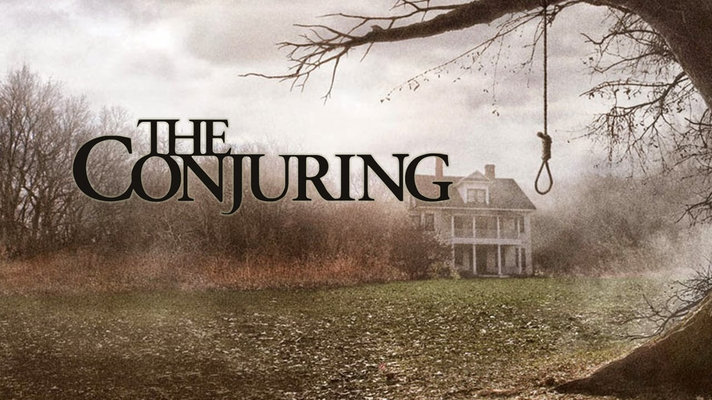
Expediente Warren: El conjuro(2013)
Basada en una historia real documentada por los reputados demonólogos Ed y Lorraine Warren. Narra los
encuentros sobrenaturales que vivió la familia Perron en su casa de Rhode Island a principios de los 70. El
matrimonio Warren...
Ver Tráiler
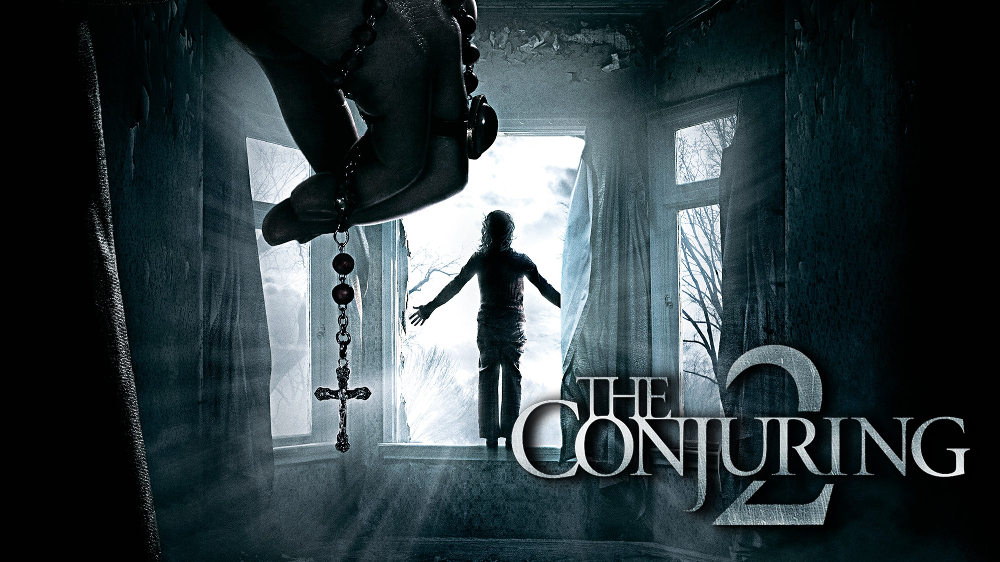
Expediente Warren: El conjuro 2 (2016)
Secuela de la exitosa 'Expediente Warren' (2013), que lleva de nuevo a la pantalla otro caso real de los
expedientes de los renombrados demonólogos Ed y Lorraine Warren. En este caso ambos viajarán al norte de
Londres para ayuda...
Ver Tráiler
La caza (2020)
Doce extraños se despiertan en el claro de un bosque con muchas preguntas sin respuesta. ¿Dónde están?
¿Cómo llegaron allí? ¿Y por qué o con qué propósito están ahí? La respuesta a todas esas preguntas es: La
caza, un juego macabro...
Ver Tráiler
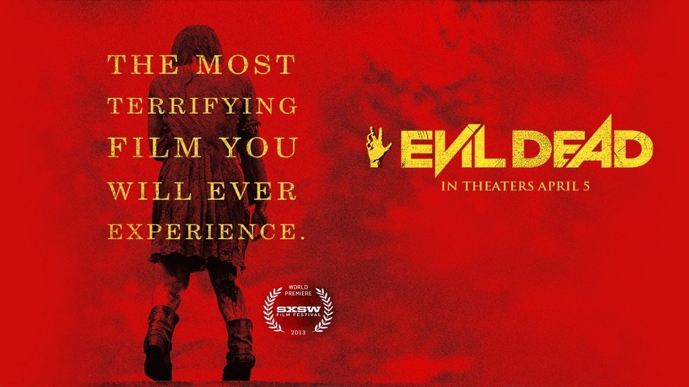
Posesión infernal(2013)
Cinco amigos se alojan en una cabaña de Tenessee para así poder ayudar a una de los jóvenes, que se
encuentra en rehabilitación por drogas. Estar sin sus drogas convierte a la chica en una persona agresiva,
lo que llevará a sus amigos...
Ver Tráiler
Posesión infernal: El despertar (2023)
Historia de dos hermanas separadas cuyo reencuentro se ve interrumpido por el surgimiento de demonios
poseedores de carne, empujándolos a una batalla por la supervivencia mientras se enfrentan a la versión
de...
Ver Tráiler
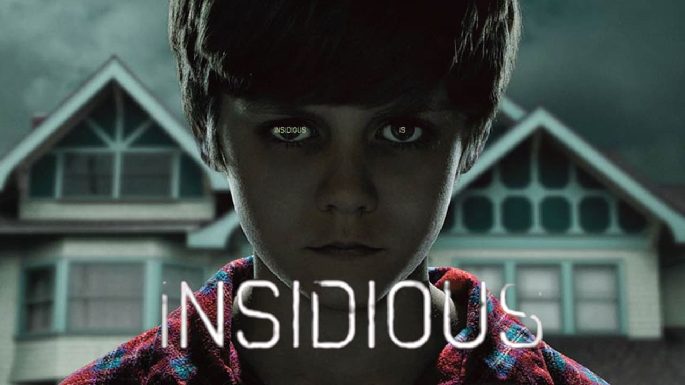
Insidious (2010)
Josh, su esposa Reani y sus tres hijos acaban de mudarse a una vieja casa. Cuando el hijo pequeño sufra un
accidente y caiga en coma, empezarán a producirse extraños fenómenos y la familia se verá acosada por algo
que no parece de este...
Ver Tráiler
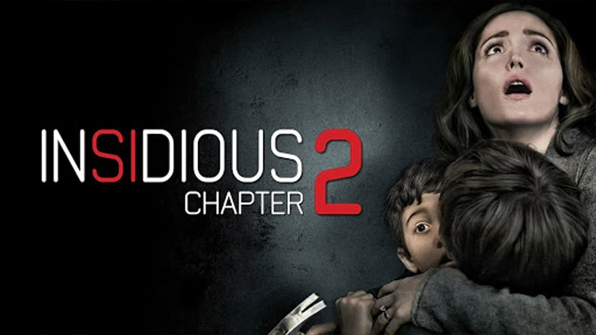
Insidious: Capítulo 2 (2013)
Josh y Renai Lambert se han mudado con sus hijos a la casa de Lorraine, la madre de Josh, esperando olvidar
el pasado y comenzar una nueva vida. Pero pronto la familia empieza a experimentar extrañas visiones y...
Ver Tráiler
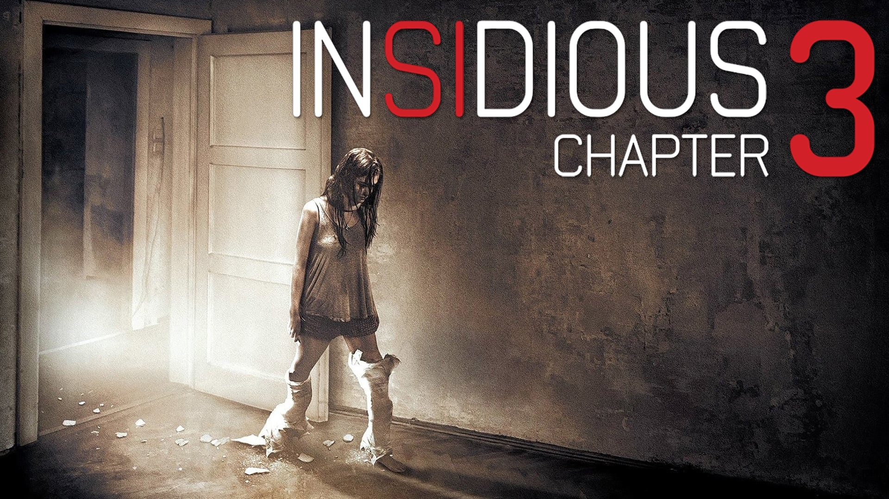
Insidious: Capítulo 3 (2015)
Elise Rainier acepta a regañadientes utilizar su capacidad de ponerse en contacto con los muertos a fin de
ayudar a una adolescente que se ha convertido en el blanco de una peligrosa entidad sobrenatural...
Ver Tráiler
Maligno (2021)
Madison es una mujer que tiene unas macabras pesadillas que la dejan completamente paralizada. Aterrada por
lo que ve en ellas, Madison no consigue dormir por las noches ni vivir por el día. Pero el terror cada vez
se irá apoderando...
Ver Tráiler
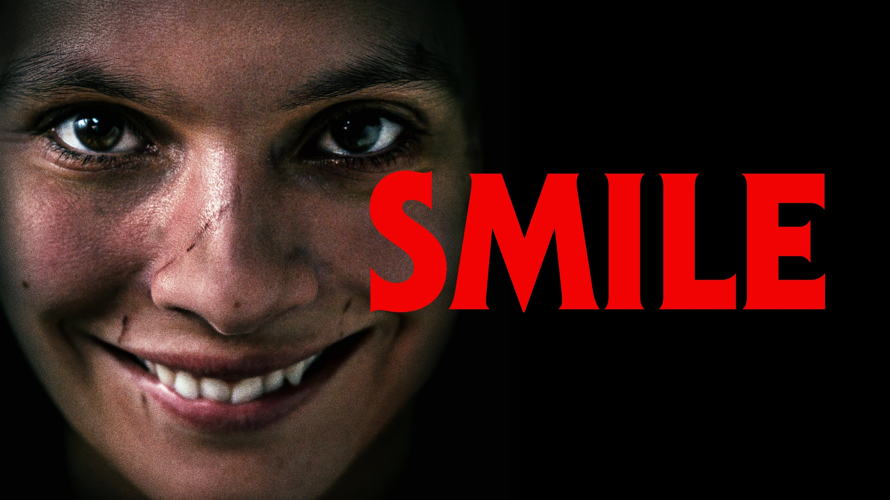
Smile (2022)
Tras presenciar un extraño y traumático incidente con un paciente, la doctora Rose Cotter comienza a
experimentar sucesos aterradores que no puede explicar. A medida que un miedo sobrecogedor comienza a
afectar...
Ver Tráiler
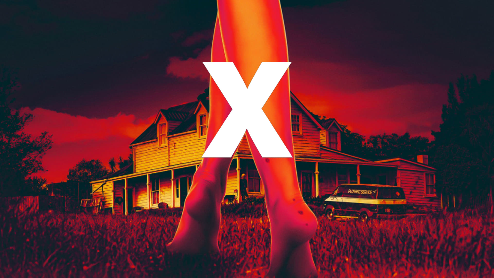
X (2022)
En 1979, un grupo de jóvenes cineastas se propusieron hacer una película para adultos en la zona rural de
Texas, pero cuando sus anfitriones solitarios y ancianos los atrapan en el acto, el elenco pronto se
encuentra en una lucha desesperada por sus vidas...
Ver Tráiler
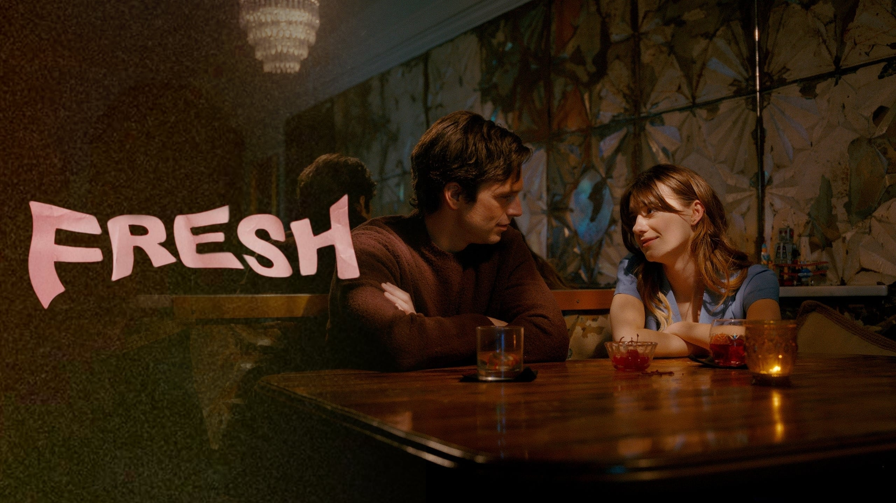
Fresh (2022)
Thriller sobre los horrores de las citas modernas vistos a través de la desafiante batalla de una joven
para sobrevivir a los inusuales apetitos de su nuevo novio...
Ver Tráiler
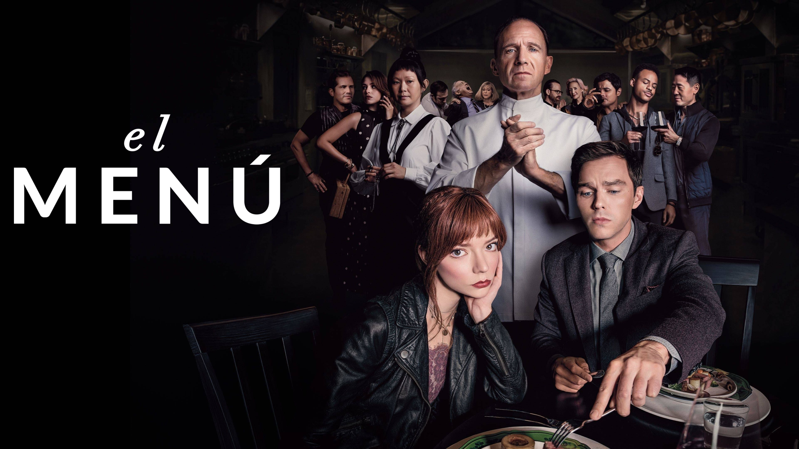
El menú (2022)
Una joven pareja viaja a uno de los destinos más exclusivos del mundo para cenar en un restaurante que
ofrece una experiencia culinaria única. Sin embargo, el chef ha preparado un ingrediente secreto que tendrá
un resultado...
Ver Tráiler
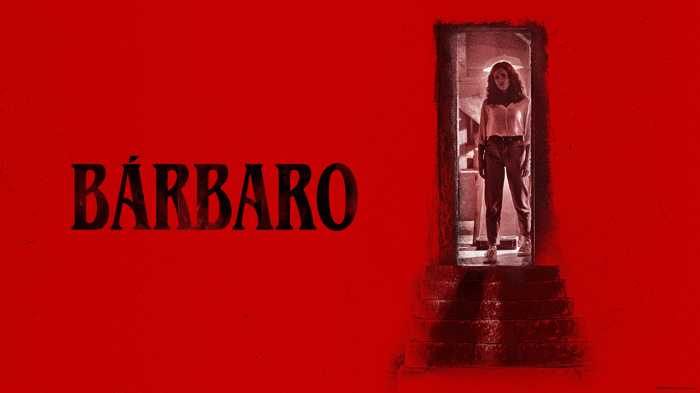
Barbarian (2022)
Una joven que viaja a Detroit para una entrevista de trabajo alquila una casa para pasar la noche. Pero
cuando llega a altas horas de la noche, descubre que la casa está doblemente reservada y que un hombre
extraño ya se está quedando allí...
Ver Tráiler
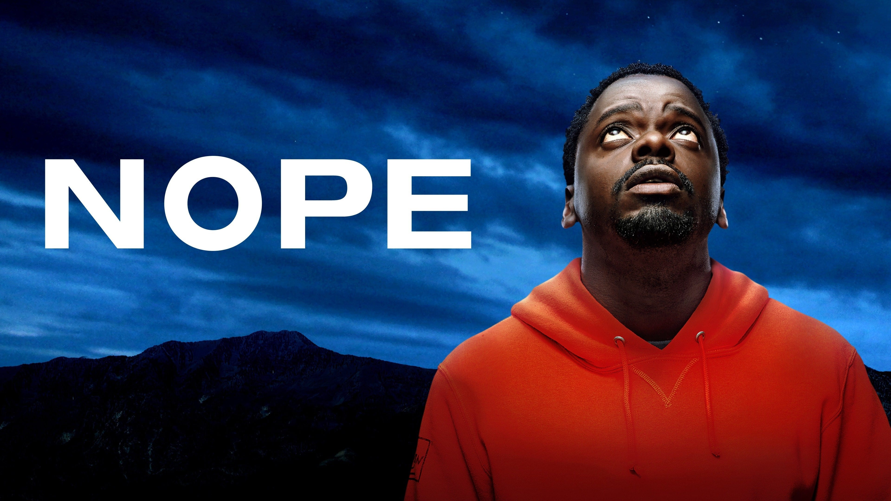
¡Nop! (2022)
Los habitantes de un remoto pueblo del interior de California, entre los que se encuentran los propietarios
de un rancho, James y Jill Haywood, realizan un descubrimiento tan insólito como estremecedor...
Ver Tráiler
Midsommar (2019)
Una pareja estadounidense que no está pasando por su mejor momento acude con unos amigos a un festival de
verano que se celebra cada noventa años en una aldea remota de Suecia. Lo que comienza como unas vacaciones
de...
Ver Tráiler
Ghostland (2018)
Una madre y sus dos hijos heredan una casa. Pero en su primera noche, aparecen unos asesinos y la madre se
ve obligada a luchar para salvar a sus hijas...
Ver Tráiler
Piscina infinita (2023)
Mientras se hospedan en un resort aislado en una isla, James y Em disfrutan de unas vacaciones perfectas en
playas vírgenes, un personal excepcional y tomando el sol. Pero guiados por la seductora y misteriosa Gabi,
se aventuran fuera...
Ver Tráiler
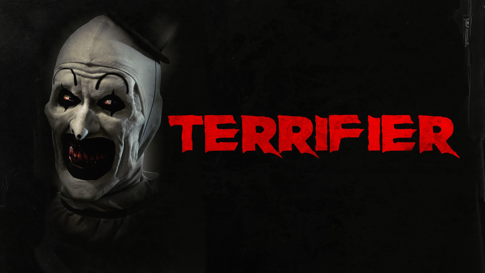
Terrifier (2018)
El payaso psicópata Art, aterroriza a dos chicas durante la noche de Halloween, matando a todos aquellos
que se interponen en su camino...
Ver Tráiler
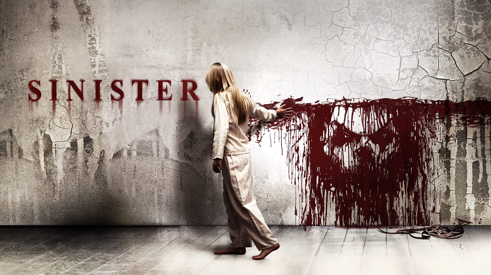
Sinister (2012)
Un periodista viaja con su familia a lo largo y ancho del país para investigar terribles asesinatos que
luego convierte en libros. Cuando llega a una casa donde ha tenido lugar el asesinato de una familia,
encuentra una cinta que desvela horribles...
Ver Tráiler